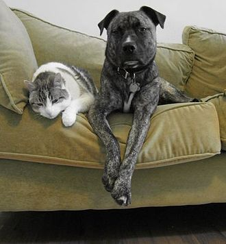
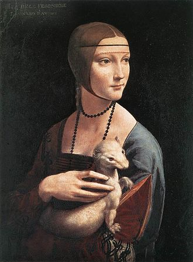

Mascotas.

El gato y el perro, las mascotas o animales de compañía más populares del mundo.
Un animal de compañía, mascota o animal doméstico,
es un animal domesticado que se conserva con el propósito de brindar
compañía o para el disfrute del cuidador. A diferencia de los
animales de laboratorio, animales para la crianza o ganado,
animales para el transporte o animales para el deporte,
los animales de compañía no son conservados para traer beneficios
económicos o alimenticios, aunque sí un beneficio personal.
Los animales de compañía son seleccionados por su comportamiento,
adaptabilidad y por su interacción con los humanos, en la que posiblemente
se utilicen como herramientas de caza o seguridad. Poseer un animal
de compañía puede traer beneficios a la salud, ya que el cuidado diario
hace olvidar a muchas personas otro tipo de preocupaciones, evita la
depresión y nos hace sentir útiles.2 Los animales de compañía más
populares son el perro y el gato.3
El animal de compañía también se caracteriza por ser amigable.
Se puede decir que la mayoría de estos animales se convierten
en domésticos si la persona con la que conviven les enseña buenos
modales en la convivencia diaria, no olvidando su naturaleza animal.
Popularidad.
Un gran porcentaje de la población mundial posee un animal de compañía:
[cita requerida] se estima que tan solo el 62% de la población de Estados
Unidos tiene un animal de compañía.7 Los animales de compañía más populares
alrededor del mundo son los gatos, en cualquier variedad de la especie.
| Animales de compañía más populares en el mundo789 |
| Posición |
Animal de compañia |
Población mundial
(millones) |
Población en Estados Unidos
(millones) |
País con mayor población |
| 1 |
Gato |
564,5 |
97,6 |
Estados Unidos |
| 2 |
Perro |
256 |
61,2 |
Estados Unidos |
| 3 |
Peces de agua dulce |
Desconocido |
151,1 |
Estados Unidos |
| 4 |
Mamíferos pequeños |
Desconocido |
16 |
Desconocido |
| 5 |
Aves |
Desconocido |
16,2 |
China |
Historia

La dama del armiño de Leonardo da Vinci.
El origen de la domesticación animal se estableció alrededor del
año 9000 a. C. en el suceso de la sedimentación humana conocido como
revolución neolítica.4 Se comenzó a utilizar a los animales con propósitos
alimenticios, pero tiempo después se descubrió que podían ser utilizados como
herramientas de caza o compañeros de caza, adoptando un valor más productivo
como tales que como alimento. Los animales fueron constantemente relacionados
con la identidad de las diferentes clases sociales en la historia, ya que la
capacidad económica permitía poseer valuadas y exóticas especies de animales y
plantas.5
El origen de la domesticación de animales es inexacto, pero se cree que comenzó
cuando el ser humano se dio cuenta de que necesitaba establecer lazos entre él y
la naturaleza para su supervivencia y desarrollo. Se estima que los perros, una de
las primeras especies animales domesticadas, han sido criados como animales de
compañía por alrededor de diez mil años. Alrededor del año tres mil quinientos a. C.
comenzó la domesticación de gatos en Egipto.6
xMúsica clásica
El rap es una forma musical que incorpora "rima, habla rítmica y jerga apoteósica",
que se interpreta en una variedad de formas, por lo general sobre un acompañamiento musical.
Los componentes del rap incluyen "contenido" (lo que se dice), "flow" (ritmo, rima) y "entrega" (cadencia, tono).
El rap generalmente se interpreta sobre una pista instrumental, aunque también puede realizarse a capella. El rap forma parte de la música hip-hop,
pero los orígenes del fenómeno son anteriores a la cultura hip-hop.
El precursor más temprano del rap moderno es la tradición griot del oeste de África, en la cual "historiadores orales", o "cantantes de alabanza",
diseminarían tradiciones orales y genealogías, o usarían sus formidables técnicas retóricas para cotillear o "elogiar o criticar individuos".
Las tradiciones de Griot se conectan con el rap a lo largo de un linaje de reverencia verbal negra que se remonta a las prácticas del antiguo Egipto,
a través de James Brown interactuando con la multitud y la banda entre canciones. Por lo tanto, las letras y la música de rap forman parte del
"continuum retórico negro" y pretenden reutilizar elementos de tradiciones pasadas al tiempo que se expanden por medio de "el uso creativo del lenguaje,
los estilos y estrategias retóricas". La persona a la que se considera como creador del estilo de "pronunciar rimas sobre música extensa", que se conocería como rap,
fue Anthony "DJ Hollywood" Holloway de Holly Springs, Georgia.
xMúsica clásica
El rap es una forma musical que incorpora "rima, habla rítmica y jerga apoteósica",
que se interpreta en una variedad de formas, por lo general sobre un acompañamiento musical.
Los componentes del rap incluyen "contenido" (lo que se dice), "flow" (ritmo, rima) y "entrega" (cadencia, tono).
El rap generalmente se interpreta sobre una pista instrumental, aunque también puede realizarse a capella. El rap forma parte de la música hip-hop,
pero los orígenes del fenómeno son anteriores a la cultura hip-hop.
El precursor más temprano del rap moderno es la tradición griot del oeste de África, en la cual "historiadores orales", o "cantantes de alabanza",
diseminarían tradiciones orales y genealogías, o usarían sus formidables técnicas retóricas para cotillear o "elogiar o criticar individuos".
Las tradiciones de Griot se conectan con el rap a lo largo de un linaje de reverencia verbal negra que se remonta a las prácticas del antiguo Egipto,
a través de James Brown interactuando con la multitud y la banda entre canciones. Por lo tanto, las letras y la música de rap forman parte del
"continuum retórico negro" y pretenden reutilizar elementos de tradiciones pasadas al tiempo que se expanden por medio de "el uso creativo del lenguaje,
los estilos y estrategias retóricas". La persona a la que se considera como creador del estilo de "pronunciar rimas sobre música extensa", que se conocería como rap,
fue Anthony "DJ Hollywood" Holloway de Holly Springs, Georgia.
By:Wikipedia